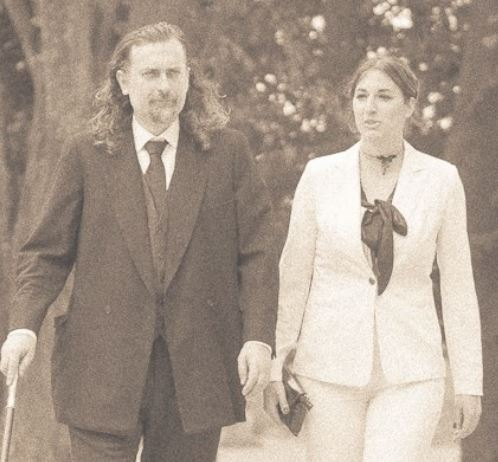
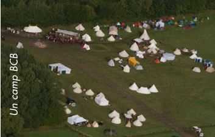

Nos Valeurs
Nous avons à coeur de rendre l'expérience du GN le plus agréable possible à la fois pour le joueurs. Mais également pour l'Assoction qui l'organise.

Qui sommes nous ?
La Fédération Française des Jeux de Rôles Grandeur Nature (FédéGN) est née en 1995 à l'initiative d'associations et de joueurs. Outre sa charte qui marque la volonté d'améliorer la qualité des GN et le sérieux de ce loisir face au public, la FédéGN a surtout mis en place des échanges entre associations pour faciliter le travail des organisateurs confrontés à des défis logistiques.
D'autres services, comme le calendrier et l'annuaire, bénéficient aussi aux joueurs et permettent de continuer à faire progresser notre activité pour la rendre plus abordable à un vaste public.
